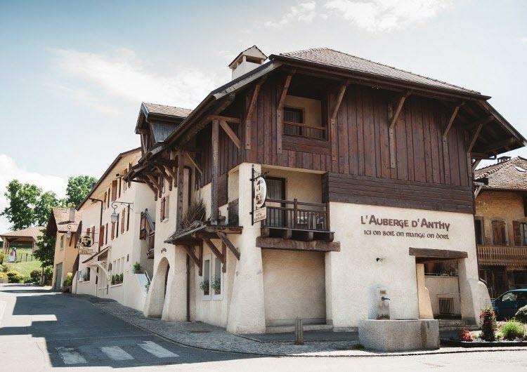

Site internet : https://www.auberge-anthy.com/
Adresse : 2 Rue des Écoles, 74200 Anthy-sur-Léman
Situé au bord du lac Léman à 5 minutes de la maison des parents de Célia, nous avons réservé l'intégralité de l'hôtel pour les nuits du vendredi et du samedi.
Ce petit hôtel-restaurant dispose de douze chambres et nous en réservons huit pour la proche famille, les témoins et les parrains-marraines.
Concernant les quatre chambres restantes, contactez-nous si vous souhaitez rester plus longtemps dans la région. En effet l'hôtel est très agréable pour un séjour prolongé et le patron nous offre 10% de réduction pour toutes les nuitées (80€/nuit pour chambre double, 9€ pour petit déjeuner).
Pour ceux qui ne seront pas logés à l'Auberge d'Anthy, nous vous laissons le soin de la réservation. Voici quelques adresses pour vous aider à choisir. Vous trouverez l'emplacement des hôtels sur le plan interactif.